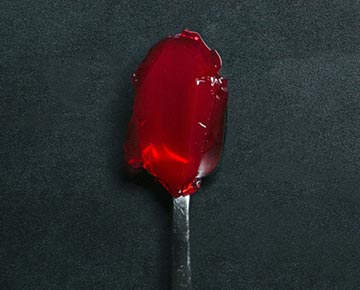
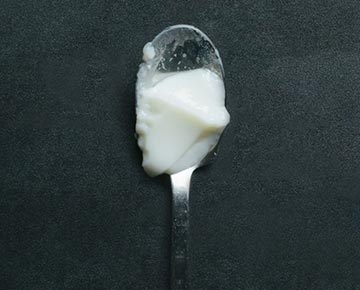

taste the colours
______________________

red
Red foods remind us of berries and soft fruits, so we anticipate a sweet taste
green
Fresh, zingy colours are reminiscent of unripe fruit, promissing sour or acid flavours.

white
White foods evoke memories of salt and salty flavours, driving the expectation of a savoury treat.